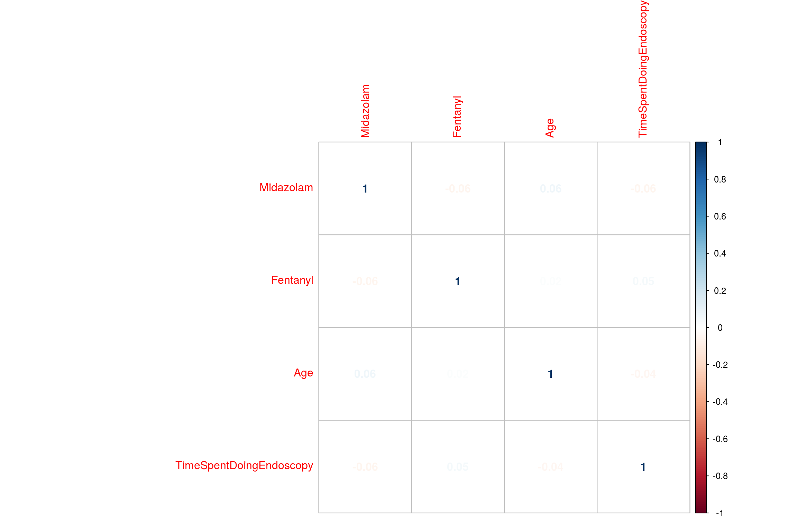
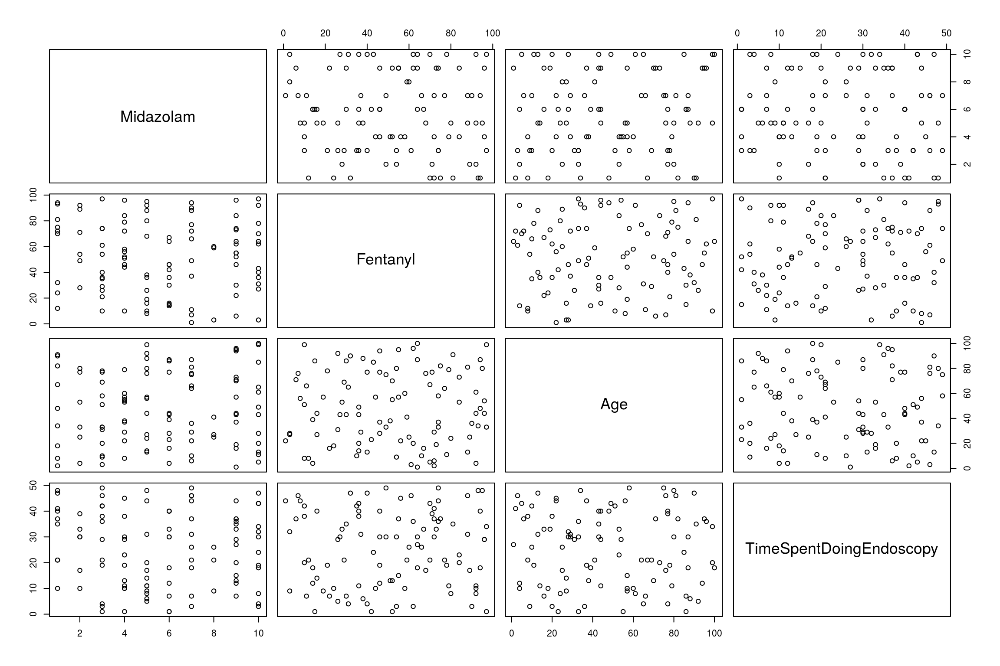
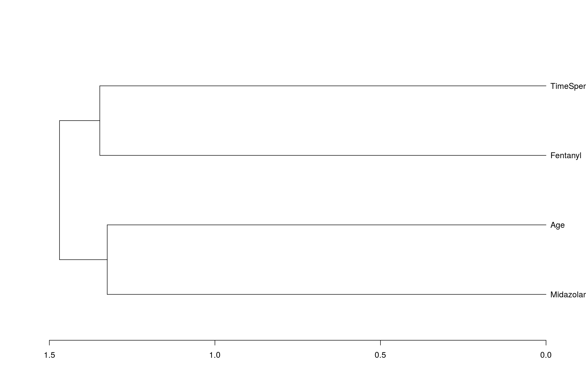

Correlations are used when you are interested in the relationship between two (unsually numerical) variables. The ‘relationship’ is defined as how the variables vary together ie the degree of covariance.
The three types of correlation you will use in basic statistics are
1: Pearson’s- for normally distributed numeric data.
2: Spearman’s- for ordinal data. Non-parametric.
3: Kendall’s correlations -non parametric numeric data.
For this page the input is going to be the amount of sedation given and the time spent doing the endoscopy
Midazolam<-sample(1:10, 100, replace=TRUE)
Fentanyl<-sample(1:100, 100, replace=TRUE)
Age<-sample(1:100, 100, replace=TRUE)
TimeSpentDoingEndoscopy<-sample(1:50, 100, replace=TRUE)
EndoCr<-data.frame(Midazolam,Fentanyl,Age,TimeSpentDoingEndoscopy,stringsAsFactors=F)The basic function to do correlation is as follows
cor(x, y, method = c("pearson", "kendall", "spearman"))
cor.test(x, y, method=c("pearson", "kendall", "spearman"))An example is as follows:
cor.test(EndoCr$Midazolam, EndoCr$Fentanyl, method = "kendall", use = "complete.obs")##
## Kendall's rank correlation tau
##
## data: EndoCr$Midazolam and EndoCr$Fentanyl
## z = -2.6544, p-value = 0.007944
## alternative hypothesis: true tau is not equal to 0
## sample estimates:
## tau
## -0.1894316For Spearman’s rank correlation, the samples have to be ranked first. cor.test does this for you:
mySpearman<-cor.test(x=EndoCr$Midazolam, y=EndoCr$Fentanyl, method = 'spearman')
mySpearman##
## Spearman's rank correlation rho
##
## data: EndoCr$Midazolam and EndoCr$Fentanyl
## S = 212000, p-value = 0.006167
## alternative hypothesis: true rho is not equal to 0
## sample estimates:
## rho
## -0.2721109To access the results from cor.test use the variables as you would a data frame. Therefore to get the p-value do:
mySpearman$p.value## [1] 0.006166761There are many ways to visualise correlations. One useful way is a correlogram using the package ‘corrplot’. The data needs to be converted into a matrix which can be done with the function cor
library(corrplot)
EndoMatrix<-cor(EndoCr)
corrplot(EndoMatrix, method="number")
Another method is as follows using scattergram which compares all numeric data with all numeric data
pairs(EndoCr)
A final nice way is to use the PerformanceAnalytics package which gives scatter, bar and numerical output:
library("PerformanceAnalytics")
chart.Correlation(EndoCr, histogram=TRUE, pch=19)Then of course we can start to do some interesting things. If we are able to generate correlations of all the numeric columns with each other, we can create a heirarchy of correlations as follows:
cc<-cor(EndoCr,
use="pairwise",
method="pearson")
cc## Midazolam Fentanyl Age
## Midazolam 1.00000000 -0.26507208 0.06465473
## Fentanyl -0.26507208 1.00000000 -0.01468070
## Age 0.06465473 -0.01468070 1.00000000
## TimeSpentDoingEndoscopy 0.13546930 0.03087351 -0.03285495
## TimeSpentDoingEndoscopy
## Midazolam 0.13546930
## Fentanyl 0.03087351
## Age -0.03285495
## TimeSpentDoingEndoscopy 1.00000000And from this create a dendogram (albeit a not very complicated one)
hc <- hclust(dist(cc), method="average")
dn<-as.dendrogram(hc)
plot(dn, horiz = TRUE)
Further information can be found here: http://www.sthda.com/english/wiki/visualize-correlation-matrix-using-correlogram#visualization-methods